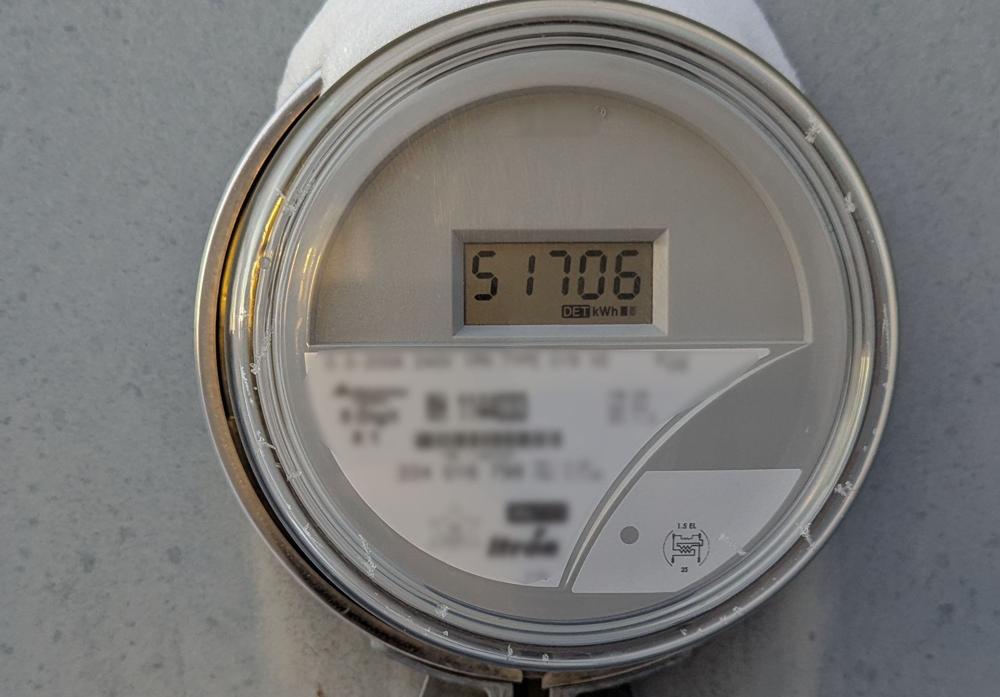
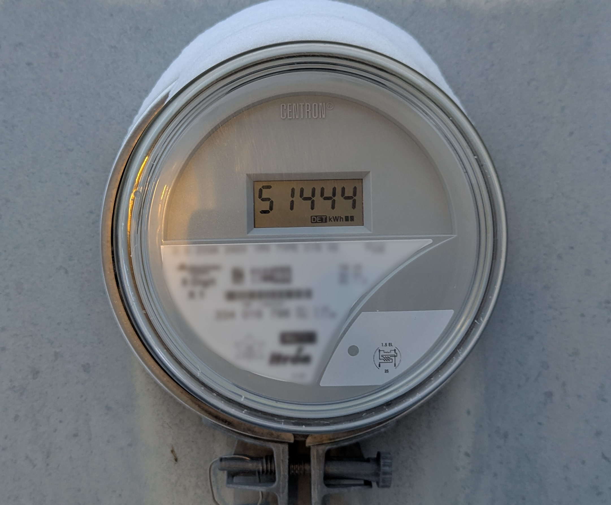
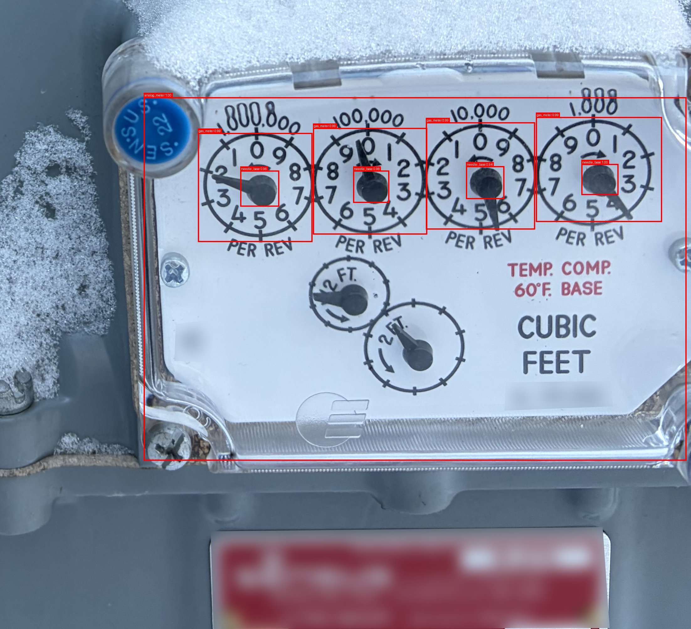

Automated
Meter Reading
Powered by AI
An end-to-end vision pipeline that locates utility meters in any photo, detects every digit on the display, and returns the reading — cutting manual transcription out of the meter-reading loop.

Raw PhotoInput photo → detected digits → extracted reading
How it works
Three-stage detection pipeline
Each stage is a separately trained model — modular, testable, and independently upgradeable without touching the rest of the system.
Meter Localization
A fine-tuned Faster R-CNN scans the full photo and draws a tight bounding box around the meter display — handling varied distances, angles, and lighting conditions in the field.
Faster R-CNN · ResNet-50 FPNDigit Localization
The cropped screen is passed to a second Faster R-CNN that detects each digit's bounding box. A custom X-axis NMS removes duplicate detections before classification.
Faster R-CNN · X-axis NMSDigit Classification
Each digit crop is classified by a lightweight CNN with a 7-segment awareness head. Digit and segment probabilities are scored jointly against a truth table for maximum accuracy.
SmallCNN · Segment-awareElectric Meters
Reads 5–6 digit LCD displays on residential and commercial electric meters with high confidence, even in outdoor glare.
Gas Meters
Analog dial detection is actively in development, targeting the full range of natural gas meters in the Manitoba Hydro fleet.
Mobile-Ready
Works on photos taken by field technicians with standard smartphones — no specialized imaging equipment required.
Structured Output
Returns readings as clean strings that integrate directly into billing systems, AMI platforms, or data pipelines.
On-Device or Cloud
Runs on CPU, Apple Silicon (MPS), or CUDA GPUs — deployable on edge hardware at substations or centrally in the cloud.
Keeps Data Local
Fully self-contained inference — meter images and readings never leave your network unless you choose to route them there.
For Manitoba Hydro
Replace manual reads with a single photo
Field technicians already photograph meters during service calls. MeterVision turns those photos into structured readings automatically — eliminating transcription errors, reducing re-read trips, and creating an auditable image archive tied to every data point.
The modular pipeline is designed to be retrained on new meter types as Manitoba Hydro's fleet evolves — without rebuilding the whole system.
Manitoba Hydro's Power Smart program and smart grid investments show a clear commitment to data-driven infrastructure. MeterVision fits directly into that modernization roadmap — adding computer vision to the meter-reading workflow with no hardware changes required on the meter itself.
Results
Live inference examples
Photos taken in real-world conditions — the pipeline handles varying brightness, angle, and meter face design.
Try the interactive dashboard →
What the pipeline produces
- Locates the meter face and screen region — any angle, any distance
- Detects every individual digit on the 7-segment LCD display
- Suppresses duplicate detections with a custom X-axis overlap threshold
- Scores digit predictions jointly with a 7-segment pattern truth table
- Orders digits left-to-right and returns the reading as a clean string
- Saves a debug image with labelled bounding boxes for audit and review
Expanding to the full Manitoba Hydro fleet
Analog dial detection for gas meters is actively being built. The localization model already identifies gas meter faces — dial angle reading is the current focus.

Technical Details
Architecture overview
Two Faster R-CNN detectors and a custom lightweight CNN, all in PyTorch — designed to be retrained as the meter fleet changes.
Meter Localizer
Fine-tuned Faster R-CNN with ResNet-50 FPN. Detects digital_meter, digital_meter_screen, and gas_meter. Highest-confidence screen box is passed downstream.
Digit Localizer
Second Faster R-CNN fine-tuned on cropped meter screens. Detects all digit bounding boxes as a single class. Custom X-axis NMS (threshold 0.5) removes overlaps before classification.
SmallDigitCNN
Lightweight 3-layer CNN on grayscale, auto-contrast crops. Dual output heads: 10-class digit classification and 7-segment binary prediction. Scored jointly via truth table.
Segment Scoring
Digit softmax probability is multiplied with sigmoid probabilities for each expected segment being ON or OFF. This physics-informed prior penalises impossible digit shapes — e.g., a "1" with all segments lit.
Dataset Pipeline
COCO-format annotations from Label Studio feed a series of scripts that generate three separate training datasets from the same source images — one per model stage.
Hardware Support
Inference automatically selects CUDA on Windows (NVIDIA GPU), Metal MPS on Apple Silicon, or CPU on all other systems — deploy anywhere without code changes.
Get started
Installation
Install dependencies for your platform, download the pre-trained weights, and run inference on any meter photo.
# Upgrade pip
py -m pip install --upgrade pip setuptools wheel
# PyTorch with CUDA 11.8 (NVIDIA GPU)
py -m pip install torch torchvision --index-url https://download.pytorch.org/whl/cu118
# Remaining dependencies
py -m pip install numpy matplotlib pillow opencv-python pycocotools label-studio
Requires an NVIDIA GPU with compatible drivers. CUDA 11.8 is bundled with the PyTorch wheel — no separate CUDA install needed.
# Upgrade pip
python3 -m pip install --upgrade pip setuptools wheel
# PyTorch (auto-enables MPS on Apple Silicon)
python3 -m pip install torch torchvision
# Remaining dependencies
python3 -m pip install numpy matplotlib pillow opencv-python pycocotools label-studio
On Apple Silicon (M1/M2/M3) PyTorch automatically uses Metal Performance Shaders. On Intel Macs, CPU inference is used.
Download the pre-trained model weights, place them alongside the script, then:
from meter_vision_pipeline_v3 import MeterVisionPipelineV3
pipeline = MeterVisionPipelineV3(
meter_model_pth="meter_localizer_fasterrcnn_state_dict.pth",
meter_label_map_json="meter_localizer_label_map.json",
digit_localizer_pth="digit_localizer_fasterrcnn_state_dict.pth",
digit_localizer_label_map_json="digit_localizer_label_map.json",
digit_classifier_pth="digit_classifier_smallcnn_segments.pth",
digit_classifier_meta_json="digit_classifier_smallcnn_segments_meta.json",
debug=True,
)
reading = pipeline.run("meter_photo.png")
print(f"Reading: {reading}")
Set debug=True to display intermediate detection steps and save meter_reading_debug.png with labelled bounding boxes.
Pre-trained model weights
Download pipeline_models_v4.7z — all three model checkpoints needed for inference on digital meters.